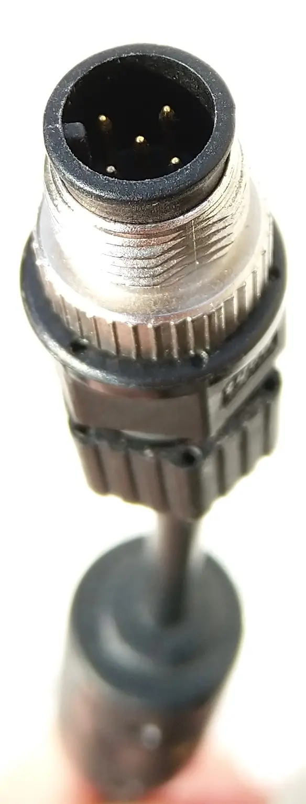
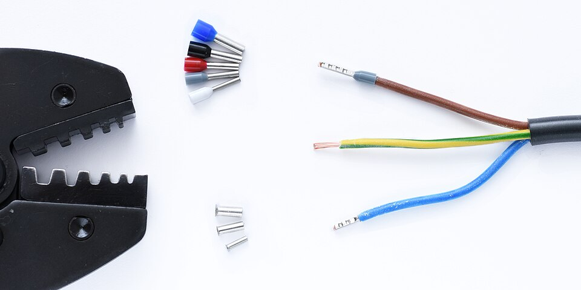

Re-terminate a passive four-pin M12 sensor cable
Fit a documented screw-terminal plug, verify its complete pin map and prove the repair under load before returning it to a machine installer.
Decide whether changing one connector will fix the cable
Use P101 to reproduce the fault on a detached passive cable. A termination fault at the end can justify a replacement plug if the remaining jacket and flex zone are sound and the application allows field-wireable parts. If the break is in a moving section, or the cable needs a special seal, shield termination or safety approval, use the correct complete cable. This exercise uses a dry bench, an unshielded passive pigtail and no machine connection.

Photo by Anordal, with labels. Original photograph · CC BY-SA 4.0.


Photo by Simon A. Eugster, scaled with labels. Original photograph · CC BY-SA 3.0.

Watch before stripping. Note which gland and housing pieces must be put on the jacket before the small wires are fitted. The video uses Mencom hardware. Follow the Phoenix Contact drawing and values below if using its example part. Mencom demonstrates field-wireable M12 assembly · ifm demonstrates connector torque tools.
Choose the parts from the data sheet
Use a Phoenix Contact 1681088 or another documented four-pin A-coded male screw-terminal plug with its instructions. Collect a compatible passive female breakout, a short cable of the correct outer diameter and conductor area, a wire stripper, correct torque tools, a meter and the P101 load fixture. Use wire ferrules and a matching crimper only when the terminal model allows them. The cable jacket must be round and match the gland design.
| Phoenix Contact 1681088 example | Value to confirm on the current data sheet |
|---|---|
| Outside jacket | 4–6 mm |
| Flexible conductor cross-section | 0.25–0.75 mm² bare or 0.14–0.75 mm² with a compatible ferrule |
| Individual wire stripping length | 5 mm, with the fitted wire-end form following the terminal instructions |
| Three different torque values | 0.2 N·m terminals, 0.8–1.0 N·m pressure screw in its housing and 0.4 N·m at the M12 knurl |
Those values apply to the documented part number. Other variants can use different terminals, glands or tightening values. The manufacturer's terminal-side drawing and mating-side drawing are different views. Copy the numbers as printed rather than trying to mirror the pin circle from memory. Phoenix Contact 1681088 data sheet and both pin views.
Terminate, label and prove every wire
Use a short unpowered practice pigtail. Record a four-row map of wire colour or tag to terminal number and identify each far end. A shop cable must follow the original documented map and the mating equipment. If the old end is unavailable and the map cannot be verified, hold the job before cutting or repinning.
Slide the gland parts onto the jacket in the correct order. Strip according to the manufacturer's housing and terminal instructions. Check every strand under light. If you use approved ferrules, check fit and strip and crimp as directed. Do not solder-tin the wire for a screw clamp unless the connector manufacturer specifically calls for it.
Seat each numbered wire fully, with no strands outside the clamp. Tighten each terminal to its specified torque and tug gently according to the instructions. Inspect the seal and seat it over the jacket where designed. Close the housing and tighten the gland so movement is carried by the outer jacket. Leave enough slack for the actual bend radius and mounting geometry. igus on cable-carrier routing and strain relief.
With both ends isolated, check all four end-to-end routes and all six unordered pairs for unwanted continuity through your breakout. Check the breakout with the reference first. Use P101's 5 V loaded test one wire at a time and gently move the termination within the cable's limits. Swap the fixture if both reference and repair show a dropout.
Keep the connector and cable numbers, pin map, check results and repeated loaded flex readings. A bench pass verifies the measured paths and that test condition. It does not add a weatherproofing or safety certification. The installer should verify the actual mounted sensor and routing before putting the machine back in service.